식후 더부룩함, 속쓰림, 변비나 잦은 설사, 입맛 저하가 이어지는 분을 위한 안내입니다. 좋은꿈참사랑한의원은 위장 증상만 따로 보지 않고 식사 시간, 잠, 스트레스와 함께 소화를 살핍니다.
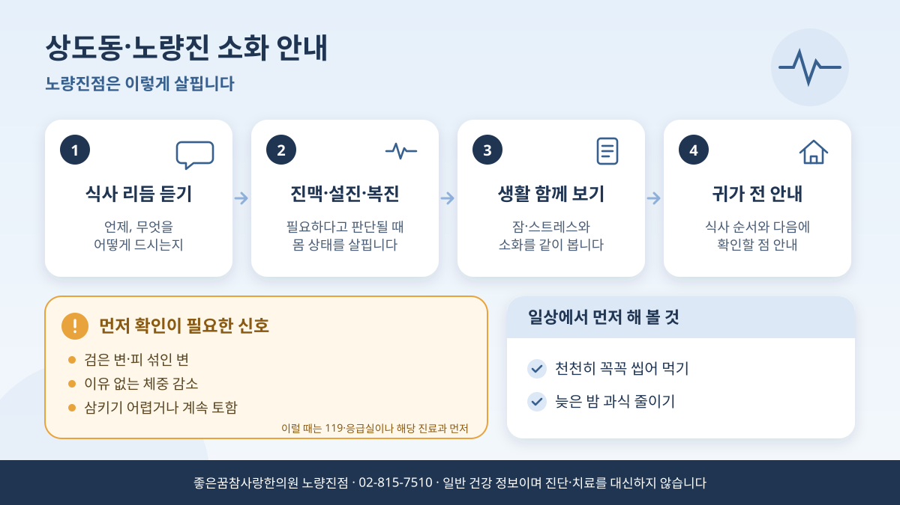
잘 먹고, 잘 소화하고, 잘 배설하기
조금만 먹어도 더부룩하거나, 스트레스를 받으면 체하거나, 손발은 찬데 얼굴은 뜨겁거나, 화장실이 늘 불편한 분이 많습니다. 검사에서는 이상이 없다고 해도 일상은 분명히 불편합니다.
소화·체온·배변을 이렇게 살펴봅니다
체중이 이유 없이 줄거나, 혈변이 있거나, 구토가 계속되면 내시경 등 검사를 먼저 받으셔야 합니다.
- 식사량, 식사 시간, 먹고 난 뒤의 느낌
- 배변 횟수와 굳기, 잔변감
- 추위·더위에 대한 느낌과 손발 온도
- 수면과 스트레스
- 진맥과 설진
만성 소화불량은 어떤 상태인가요?
검사에서 큰 이상이 없다는 말을 들었는데도 식후 더부룩함, 이른 포만감, 명치 불편이 몇 주 이상 반복되는 경우가 있습니다. 이럴 때는 먹는 양과 속도, 식사 시간, 잠과 긴장의 리듬을 함께 보는 것이 출발점입니다.
위나 장에 눈에 띄는 이상이 없어도 음식을 받아들이고 내려보내는 리듬이 흔들리면 불편이 생길 수 있습니다. 그래서 무엇을 먹었는지만큼 언제, 어떻게, 어떤 상태에서 먹었는지를 함께 봅니다.
상담에서 자주 듣는 이야기
같은 더부룩함이라도 식후 바로 오는지, 몇 시간 뒤에 오는지, 공복에 쓰린지에 따라 여쭙는 질문이 달라집니다.
- 조금만 먹어도 배가 꽉 찬 느낌
- 신물이 올라오거나 가슴이 쓰림
- 시험·마감 앞에서 배가 아프거나 설사
- 며칠씩 이어지는 변비
먼저 이렇게 여쭙니다
증상이 생기기 전 며칠 동안 먹은 것과 잠, 긴장했던 일을 떠올려 오시면 상담이 구체적이 됩니다.
- 하루 식사 시간과 먹는 속도
- 증상이 식후 몇 분 뒤에 오나요?
- 내시경 등 최근 검사 결과가 있나요?
- 복용 중인 위장약이나 다른 약이 있나요?
생활에서 먼저 해 볼 것
'좋다는 음식'을 한꺼번에 챙기기보다 불편을 키우는 습관 하나를 줄이는 쪽이 오래 이어 가기 쉽습니다. 변화는 식사 일기로 확인해 보세요.
- 한 입에 20번 이상 씹으며 천천히 먹기
- 저녁은 잠들기 3시간 전에 마치기
- 식후 바로 눕지 않기
- 커피·술·맵고 기름진 음식 줄여 보기
한의원에서 함께 살피는 것
소화와 대소변, 잠, 몸의 온기를 차례로 여쭙고, 진맥과 함께 필요하다고 판단될 때 복진·설진으로 살핍니다. 상태에 맞게 침과 한약 상담 등을 안내하며, 복용 중인 위장약은 처방한 의사와 상의 없이 끊지 않습니다.
필요하면 내과 검사나 내시경을 먼저 권하기도 합니다.
한의학에서는 소화를 이렇게 함께 봅니다
한의학에서는 소화를 비위(脾胃)의 기능으로 설명하며, 몸의 온기와 마음의 긴장이 소화에 함께 영향을 준다고 봅니다. 찬 음식을 먹으면 더 불편한지, 긴장하면 배가 아픈지, 손발이 찬지 같은 질문을 드리는 이유입니다. 복진으로 배의 긴장과 온기를 살피는 것도 같은 맥락입니다.
- 찬 음식이나 음료 뒤에 불편한지
- 긴장하면 배가 먼저 반응하는지
- 대변이 단단한지, 무른지
이럴 때는 다른 진료를 먼저 받으세요
아래 신호가 없더라도 증상이 몇 달씩 이어지면 내과 검사를 한 번 받아 보시기를 권합니다.
- 피를 토하거나 검은 변을 볼 때: 응급실
- 삼키기 어렵거나 이유 없이 체중이 줄 때
- 구토가 계속되거나 배가 심하게 아플 때
- 40대 이후 처음 생긴 증상이 이어질 때: 내시경 등 검사 먼저
좋은꿈참사랑한의원 진료는 이렇게 진행됩니다
접수 후 상담에서 식사와 증상의 시간 순서를 듣고, 필요한 진찰을 거쳐 치료와 생활 안내를 드립니다. 식사 일기를 3~7일 적어 오시면 이야기가 구체적이 됩니다. 다음 진료에서는 그사이 달라진 점부터 이어서 여쭙습니다.
아이와 함께 오시면 보호자께 식사와 배변 습관을 함께 여쭙습니다. 평일 저녁과 주말에도 진료하니 편한 시간에 예약해 주세요.
상도동·노량진에서
노량진 학원가에서는 컵밥과 편의점 식사로 빠르게 끼니를 때우는 수험생이, 사무실 직장인은 늦은 저녁과 회식 뒤 속쓰림을 이야기하곤 합니다. 좋은꿈참사랑한의원은 상도역 3번 출구에서 약 400m 거리이며 평일 저녁 8시까지 진료해 퇴근 뒤에도 상담받을 수 있습니다. 노량진역 3번 출구에서는 마을버스 동작01번으로 오실 수 있습니다.
자주 묻는 질문
스트레스를 받으면 왜 체하나요?
긴장하면 위장의 움직임이 영향을 받을 수 있습니다. 소화 증상을 볼 때 긴장과 수면을 함께 살피는 이유입니다.
매일 대변을 보지 않으면 변비인가요?
횟수만으로 판단하지 않습니다. 굳기, 힘주는 정도, 잔변감을 함께 봅니다.
몸이 차면 늘 따뜻하게만 해야 하나요?
차갑게 느끼는 이유가 사람마다 다릅니다. 갑상선, 빈혈 등 다른 원인도 고려해서 방향을 정합니다.
노량진 근처에서 소화불량 상담을 받을 수 있는 한의원이 있나요?
좋은꿈참사랑한의원에서 소화 상담을 합니다. 진료시간은 평일 09:30~20:00(점심 13:00~14:00), 토·일·공휴일 09:30~15:00입니다.
내시경에서 이상이 없다는데 계속 더부룩해요.
검사 결과와 함께 식사·잠·긴장의 리듬을 여쭙고 생활에서 바꿔 볼 점을 함께 찾습니다.
위장약을 먹고 있어도 한약 상담이 가능한가요?
가능합니다. 약 이름을 알려 주시고, 약은 처방한 의사와 상의 없이 끊지 마세요.
시험 때만 배가 아파요. 상담할 수 있나요?
네. 긴장과 소화는 함께 움직이는 경우가 많아 시험 일정과 식사·잠 패턴을 함께 살핍니다.
아이 소화 문제도 볼 수 있나요?
볼 수 있습니다. 아이의 식사량, 간식, 잠, 배변 습관을 보호자와 함께 여쭙습니다.
식사 일기는 어떻게 쓰나요?
먹은 시각, 음식, 양, 식후 증상, 잠든 시각을 간단히 적으면 됩니다.
예약은 어떻게 하나요?
네이버 예약, 카카오톡 상담, 전화(02-815-7510)로 하실 수 있습니다.
역류성 식도염 약을 먹는데 상담해도 되나요?
상담받으실 수 있습니다. 복용 중인 약을 알려 주시고, 약은 처방한 의사와 상의 없이 끊지 마세요.
변비도 한의원에서 상담하나요?
네. 식사량, 물 섭취, 활동량, 잠과 함께 배변 습관을 여쭙고 생활에서 바꿔 볼 점을 함께 찾습니다.
감수: 좋은꿈참사랑한의원 대표원장 이종호 · 마지막 확인 2026-11-26 · 일반적인 건강 정보이며 진단·치료를 대신하지 않습니다.
만성소화불량 글 모아 보기 (64편)

밥만 먹으면 바로 화장실이 급해지는 식후 급한 변의는 어떻게 살피나요?
숟가락을 내려놓기 무섭게 아랫배가 꾸르륵거리고 화장실을 찾게 되는 분이 많습니다. 식사 뒤 장이 움직이는 원리와 과민성 장과의 차이, 식사 방법과 생활에서 살필 것을 정리했습니다.
수정 2026-11-26

입맛이 쓰거나 맛을 잘 못 느끼는 미각 이상은 어떻게 살피나요?
입안이 늘 쓰거나 쇠맛이 돌고, 음식 맛이 밍밍하게 느껴지는 미각 이상은 입안 상태, 냄새 감각, 드시는 약, 영양, 역류, 잠과 긴장이 함께 얽혀 있는 경우가 많습니다. 어떻게 나눠 살피는지와 일상 관리법을 정리했습니다.
수정 2026-11-26

잇몸이 붓고 양치할 때 피가 날 때, 치과 진료와 함께 몸은 무엇을 살피나요?
양치할 때 피가 비치고 잇몸이 붓는다면 치과에서 치석과 잇몸 상태를 먼저 확인하는 것이 순서입니다. 그와 함께 피로, 입마름, 잠, 혈당, 드시는 약처럼 잇몸을 흔드는 몸의 사정을 어떻게 살피는지 정리했습니다.
수정 2026-11-26

여름에 냉면·빙수·찬 음료를 먹고 나면 배가 아프고 설사할 때는 어떻게 살피나요?
더운 날 찬 음식과 찬 음료를 몰아 먹은 뒤 배가 꾸르륵거리고 묽은 변을 보는 여름 배탈은 차가움, 과식, 상한 음식이 섞여 생깁니다. 장염과 어떻게 나누고 생활에서 무엇을 살필지 정리했습니다.
수정 2026-11-26

소변을 보고 나와도 덜 본 것처럼 개운하지 않은 잔뇨감은 어떻게 살피나요?
화장실을 다녀와도 아직 남은 듯 찜찜한 잔뇨감은 방광, 전립선, 골반 근육, 물 마시는 습관, 긴장이 함께 얽혀 생기곤 합니다. 무엇을 나눠 보고 비뇨의학과 검사와 한의원 진료를 어떻게 나란히 이어 가는지 정리했습니다.
수정 2026-11-26
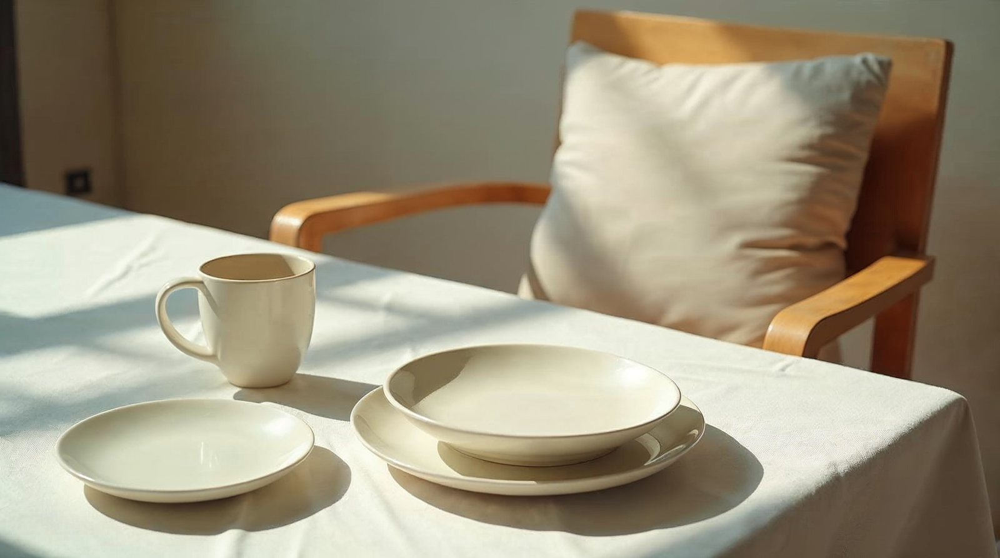
밥만 먹으면 눈꺼풀이 무거워지는 식곤증은 왜 생기고 어떻게 살피나요?
점심을 먹고 자리에 앉으면 눈꺼풀이 내려앉는 식곤증은 흔하지만, 매일 심하다면 끼니의 양과 속도, 잠, 혈당 흐름을 함께 볼 때입니다. 식곤증이 생기는 까닭과 일상에서 줄이는 방법, 한의원에서 살피는 점을 정리했습니다.
수정 2026-11-26

위 절제 수술을 받은 뒤 식사가 어렵고 체중이 계속 빠질 때는 무엇을 살피나요?
위를 일부 또는 전부 떼어 낸 뒤에는 조금만 먹어도 배가 차고, 식후 어지럼이나 설사가 오며, 체중이 쉽게 줄어듭니다. 덤핑 증상, 나눠 먹는 식사법, 영양과 근육 지키기, 한의원에서 함께 살피는 부분을 정리했습니다.
수정 2026-11-26

장염을 앓고 난 뒤 장이 예전 같지 않을 때, 회복기에는 무엇을 살피나요?
장염의 큰 고비는 지났는데 묽은 변과 더부룩함, 기운 없음이 몇 주씩 남을 때가 있습니다. 회복기 장의 상태를 나눠 보고, 식사를 되돌리는 순서와 물, 잠, 찬 음식을 함께 살피는 방법을 정리했습니다.
수정 2026-11-26

쓸개(담낭)를 떼어 낸 뒤 기름진 음식만 먹으면 설사하고 소화가 더딜 때는 어떻게 살피나요?
담석이나 담낭 용종으로 쓸개를 떼어 낸 뒤 기름진 식사 다음에 설사를 하거나 더부룩함이 오래 남는 분이 있습니다. 왜 그런 변화가 생기는지, 수술한 병원에 먼저 알릴 것, 식사 조절과 한의원에서 함께 살피는 부분을 정리했습니다.
수정 2026-11-26
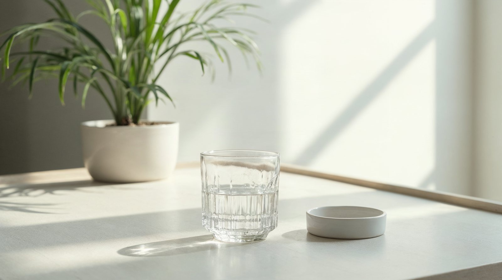
위궤양이나 십이지장궤양 치료를 받고 회복하는 동안에는 식사와 생활을 어떻게 살피나요?
위궤양과 십이지장궤양은 약과 제균 치료로 아물어 가는 동안에도 식사 시각, 진통제, 술과 담배, 긴장이 회복의 흐름을 좌우합니다. 내과 치료를 이어 가면서 회복기의 생활과 한의원에서 함께 살피는 부분을 정리했습니다.
수정 2026-11-26

어르신이 식사 중 사레가 자주 걸리고 음식 삼키기가 불편해질 때는 어떻게 살피나요?
나이가 들면 삼키는 근육과 감각이 무뎌져 물이나 밥에 사레가 잘 걸리고 목에 걸린 느낌이 남기 쉽습니다. 삼킴이 불편해지는 이유와 먼저 받아야 할 검사, 식탁과 자세에서 바꿔 볼 것을 정리했습니다.
수정 2026-11-26

나이 들며 변이 굳고 며칠씩 화장실에 가지 못하는 어르신 변비는 어떻게 살피나요?
연세가 들면 덜 드시고 덜 움직이며 물도 적게 드시게 되고, 드시는 약도 늘어 변이 굳기 쉽습니다. 어르신 변비를 식사·물·움직임·약·배변 습관으로 나눠 살피고, 내과 진료와 함께 한의원에서 무엇을 보는지 정리했습니다.
수정 2026-11-26
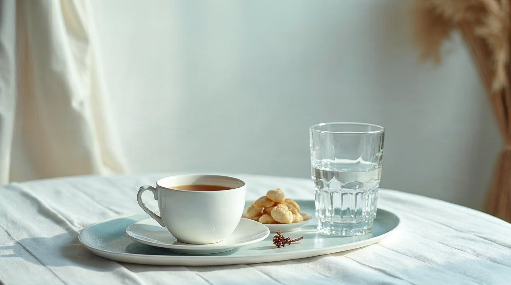
어르신이 입맛을 잃고 드시는 양이 부쩍 줄었을 때는 무엇을 살피나요?
나이가 들면 입맛과 식사량이 조금씩 줄 수 있지만, 몇 주 사이 눈에 띄게 줄었다면 이유를 찾아봐야 합니다. 치아·약·소화·기분·혼밥까지 어르신 식욕 저하의 원인과 가족이 함께할 일을 정리했습니다.
수정 2026-11-26
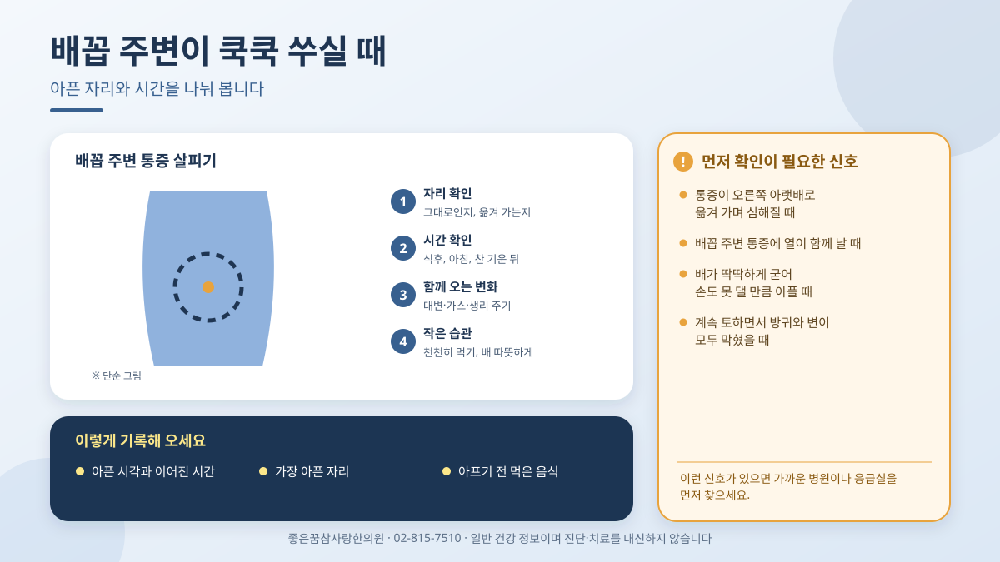
배꼽 주변이 쿡쿡 쑤시듯 아픈 복통은 왜 생기고 어떻게 살피나요?
배꼽 둘레가 쿡쿡 쑤시거나 꼬이듯 아플 때는 식사, 장의 움직임, 가스, 찬 기운, 긴장이 함께 얽혀 있는 경우가 많습니다. 통증의 자리와 시간을 나눠 보는 방법과 한의원에서 함께 살피는 내용을 정리했습니다.
수정 2026-11-26
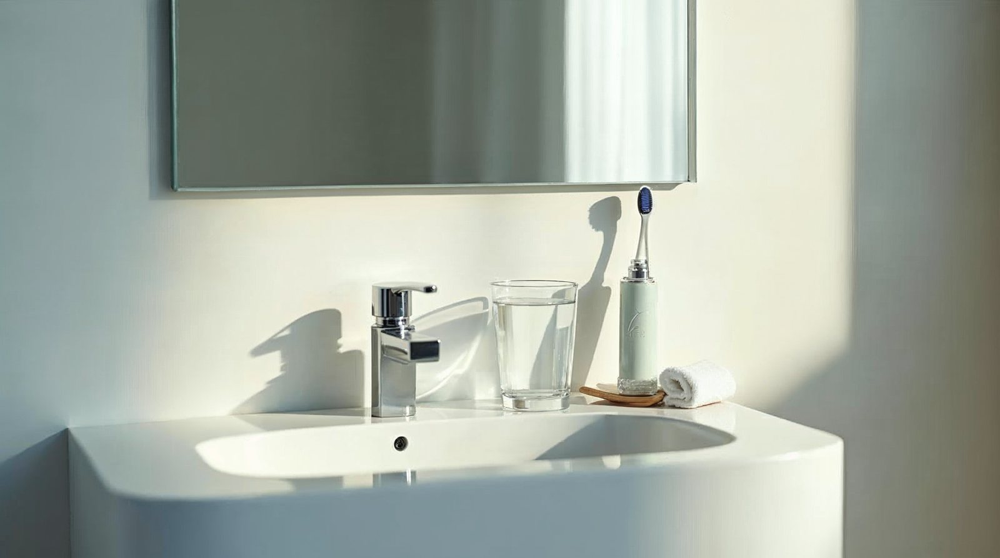
아침에 일어나 빈속일 때마다 속이 메스껍고 헛구역질이 날 때는 어떻게 살피나요?
아침 빈속에 속이 울렁이고 양치하다 헛구역질이 나는 날이 이어지면 위산, 늦은 저녁, 잠, 긴장, 코 뒤로 넘어가는 콧물까지 함께 살펴야 합니다. 원인을 나눠 보는 방법과 한의원에서 함께 살피는 내용을 정리했습니다.
수정 2026-11-26

입맛이 없고 식사량이 줄었을 때 한의원에서는 무엇을 먼저 묻나요?
입맛이 없고 식사량이 줄면 잠, 마음, 소화, 계절 가운데 무엇이 흔들렸는지 살피고 끼니 리듬과 작은 양부터 정리합니다. 원하지 않는 체중 감소, 삼킴 곤란, 반복되는 구토, 검은 변이 있으면 검사가 먼저입니다.
수정 2026-11-26

인터넷에서 장누수 증후군이라는 말을 보고 내 장이 새는 건 아닌지 걱정될 때는 어떻게 살피나요?
더부룩함, 피로, 피부 트러블이 겹치다 보면 장누수라는 말이 눈에 들어옵니다. 장벽이 하는 일, 지금까지 알려진 것과 아직 모르는 것, 검사와 보충제를 대하는 법, 장을 편하게 하는 생활과 한의원에서 함께 살피는 부분을 정리했습니다.
수정 2026-11-26

배가 자주 아프고 설사·변비가 반복되는 과민성 장 증후군은 어떻게 살피나요?
과민성 장 증후군은 설사형·변비형·혼합형을 나누고, 긴장과 잠, 음식, 배변을 함께 기록해 살핍니다. 혈변, 이유 없는 체중 감소, 자다가 깨는 설사, 50세 이후 새로 생긴 변화는 내과 검사가 먼저입니다.
수정 2026-11-26

변을 보고 나도 개운하지 않은 잔변감, 하루에 여러 번 화장실에 갈 때는 어떻게 살피나요?
변을 보고 나서도 덜 본 것 같고 하루에 몇 번씩 화장실을 찾게 되는 잔변감은 장의 예민함, 변의 굳기, 배변 자세와 습관, 항문과 골반 근육, 긴장이 함께 얽혀 있는 경우가 많습니다. 나눠 살피는 법과 생활 관리를 정리했습니다.
수정 2026-11-26
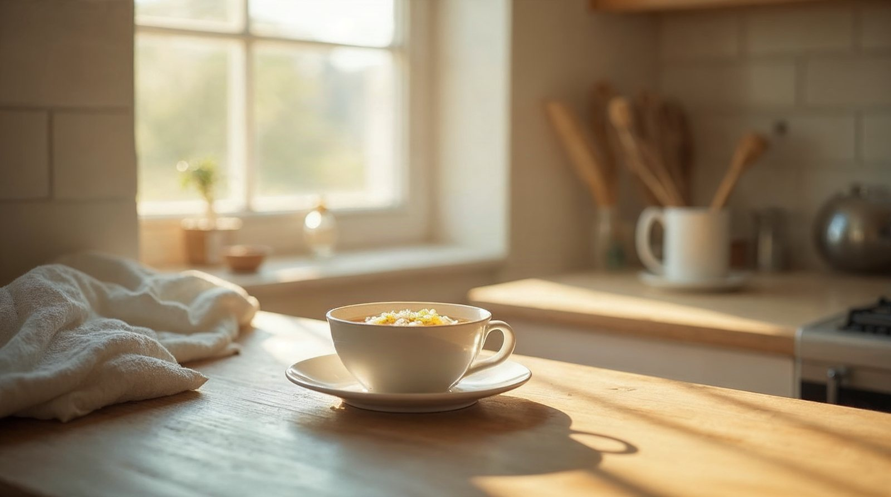
아침마다 배가 꾸르륵거리고 급하게 화장실을 찾게 되는 설사형 과민성 장은 어떻게 살피나요?
출근길 지하철에서 배가 꾸르륵거려 내릴 역보다 화장실 위치를 먼저 떠올리게 되는 설사형 과민성 장. 왜 아침에 몰리는지, 다른 장 질환과 어떻게 구분하는지, 생활 리듬과 한의원에서 함께 살피는 부분을 정리했습니다.
수정 2026-11-26

배가 더부룩하게 아프고 변을 봐도 시원하지 않은 변비형 과민성 장은 어떻게 살피나요?
며칠씩 변을 못 보다가 겨우 봐도 토끼똥처럼 조금 나오고, 아랫배는 늘 묵직하게 아픈 변비형 과민성 장. 단순 변비와 어떻게 다른지, 왜 배가 함께 아픈지, 식사와 화장실 습관, 한의원에서 함께 살피는 부분을 정리했습니다.
수정 2026-11-26
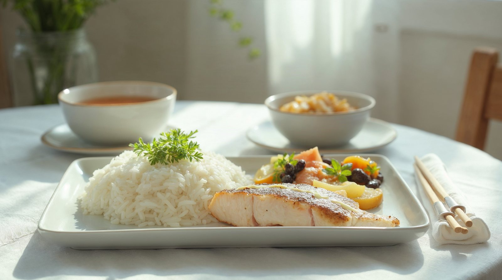
궤양성 대장염이나 크론병으로 치료를 받는 동안 생활과 한의원 진료는 어떻게 함께 살피나요?
궤양성 대장염과 크론병은 소화기내과 치료를 꾸준히 이어 가는 것이 중심입니다. 두 병의 차이, 좋아진 시기와 나빠진 시기의 생활, 식사와 피로, 마음 관리, 치료와 나란히 한의원에서 함께 살필 수 있는 부분을 정리했습니다.
수정 2026-11-26
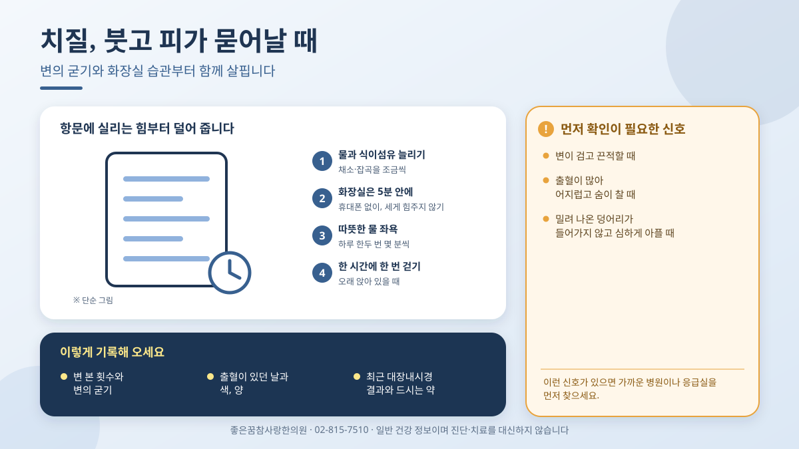
치질 때문에 항문이 붓고 피가 묻어날 때 무엇을 구분하고 어떻게 살피나요?
흔히 치질이라 부르는 불편은 치핵, 항문이 찢어지는 치열, 고름이 잡히는 항문 주위 농양 등으로 나뉩니다. 변 습관과 앉는 시간을 함께 보고, 배변 습관과 앉아 있는 시간, 물과 식사를 함께 살핍니다.
수정 2026-11-26
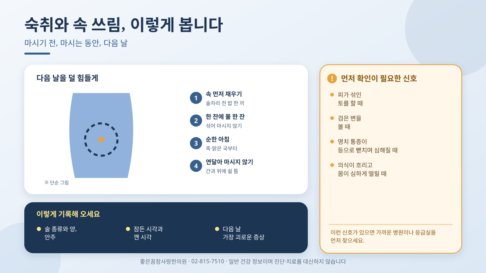
술 마신 다음 날 숙취와 속 쓰림은 왜 생기고 어떻게 살피나요?
술자리 다음 날 머리가 지끈거리고 속이 쓰리며 하루 종일 기운이 없다면, 몸이 알코올을 처리하느라 애쓴 흔적입니다. 숙취가 생기는 이유와 다음 날 속을 달래는 법, 한의원에서 함께 살피는 부분을 정리했습니다.
수정 2026-11-26
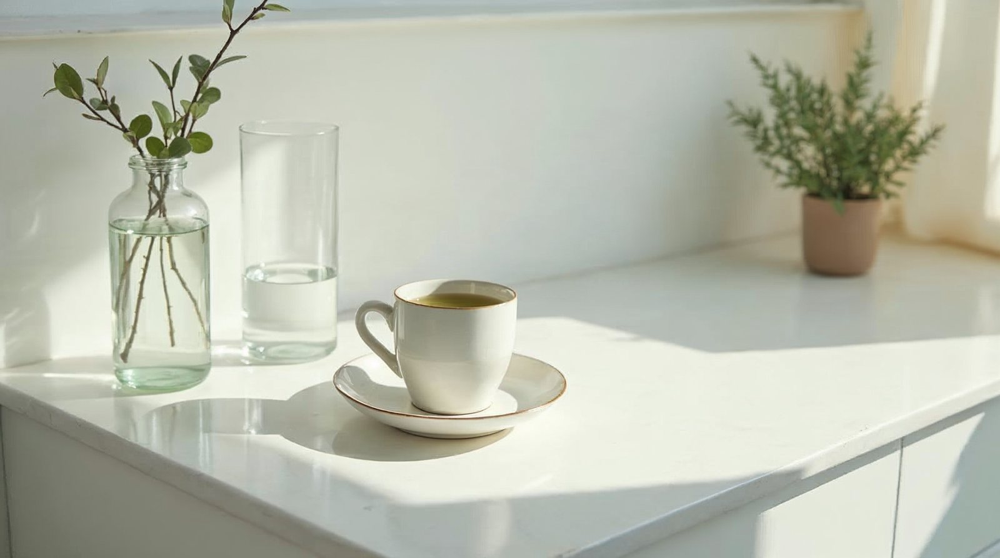
양치를 해도 입냄새가 신경 쓰일 때, 입·코·속의 원인은 어떻게 나눠 살피나요?
입냄새는 대부분 입 안에서 시작되지만 코와 목, 입 마름, 속의 불편이 함께 얽히기도 합니다. 치과 점검을 먼저 하고, 혀와 침, 코로 숨쉬기, 식사와 잠을 차례로 살피는 방법을 정리했습니다.
수정 2026-11-26
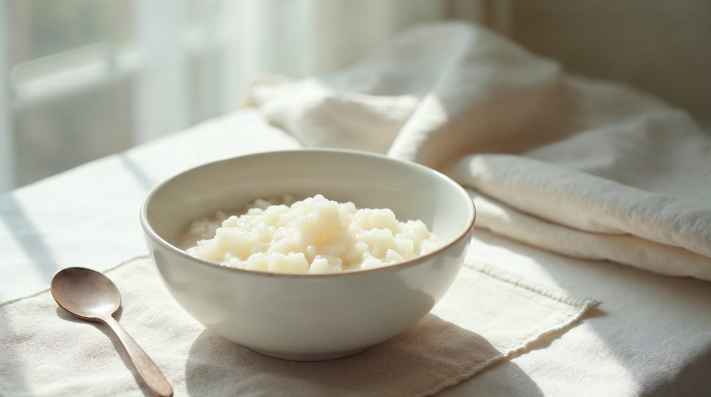
밥이 위에서 내려가지 않는 느낌, 위하수·위무력이라는 말을 들었을 때는 어떻게 살피나요?
조금만 먹어도 배가 부르고 밥이 위에 오래 머무는 느낌은 위가 음식을 내려보내는 힘과 속도, 근육량, 자세, 식사 습관과 함께 움직입니다. 위하수·위무력이라는 말의 뜻과 일상에서 해 볼 것, 한의원에서 살피는 것을 정리했습니다.
수정 2026-11-26

검진에서 담석이 있다고 하거나 기름진 식사 뒤 오른쪽 윗배가 불편할 때는 어떻게 살피나요?
담석은 쓸개 안에 생긴 작은 돌로, 아무 증상 없이 지내는 분도 있고 기름진 식사 뒤 오른쪽 윗배가 묵직한 분도 있습니다. 소견 읽는 법, 체하는 느낌과의 차이, 식사 리듬과 한의원에서 함께 살피는 부분을 정리했습니다.
수정 2026-11-26

자주 체한다는 느낌, 식체나 담적이라는 말은 무엇을 뜻하고 어떻게 살피나요?
흔히 '체했다'고 하는 말은 명치가 꽉 막히고 답답하며 트림·메스꺼움·두통이 함께 오는 느낌을 넓게 부르는 표현입니다. 식체와 담적이라는 한의학 표현의 뜻, 기능성 소화불량과의 관계, 자주 체하는 하루의 습관을 함께 정리했습니다.
수정 2026-11-26
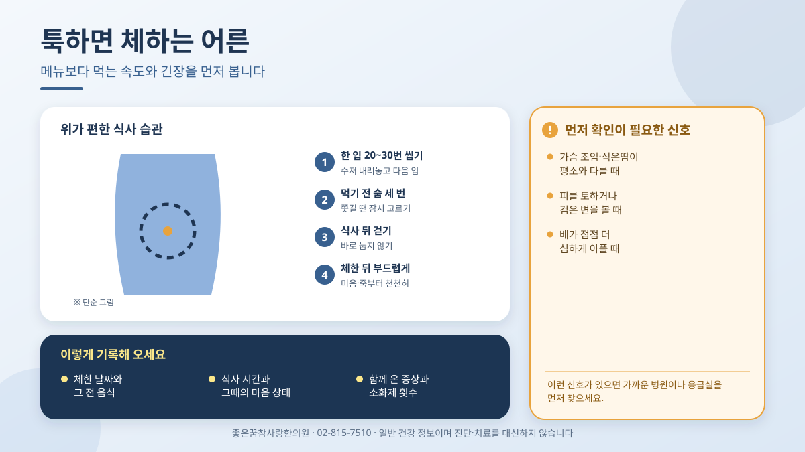
어른이 되어서도 툭하면 체하고 급체가 되풀이될 때는 무엇을 살피나요?
조금만 급하게 먹어도 명치가 꽉 막히고 머리가 아프며 손발이 차가워지는 급체가 자주 되풀이된다면, 먹는 속도와 긴장, 위의 움직임을 볼 때입니다. 체하는 까닭과 비슷한 증상 구분, 일상 관리와 한의원에서 살피는 점을 정리했습니다.
수정 2026-11-26
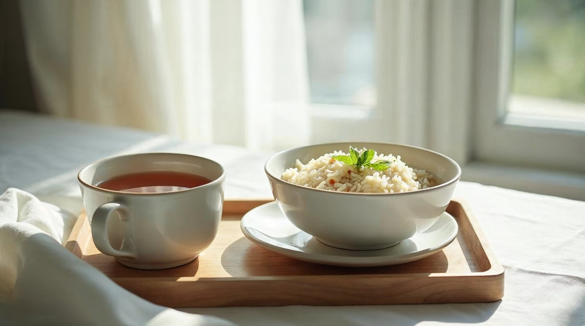
트림이 하루 종일 잦을 때는 무엇 때문이고 어떻게 살피나요?
식사 뒤뿐 아니라 하루 종일 트림이 이어지면 삼키는 공기, 식사 속도, 탄산과 껌, 긴장, 위의 흐름을 함께 살펴야 합니다. 트림이 잦아지는 이유와 일상에서 줄여 볼 수 있는 습관, 한의원에서 여쭙는 것을 정리했습니다.
수정 2026-11-26
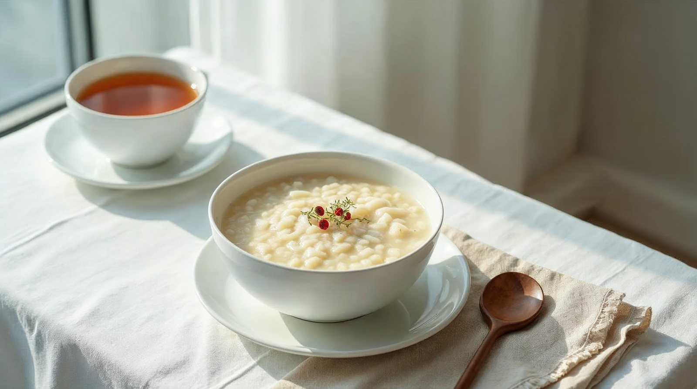
명치가 아프거나 꽉 막힌 듯 답답할 때는 무엇을 나눠 살피나요?
명치 통증과 답답함은 위뿐 아니라 식도, 쓸개, 췌장, 가슴 근육과 긴장까지 여러 갈래에서 생길 수 있습니다. 아픈 모양과 때를 나눠 보는 법, 일상에서 해 볼 것, 한의원에서 여쭙고 살피는 것을 정리했습니다.
수정 2026-11-26

물을 마셔도 입이 바싹 마르는 구강건조증은 어떻게 살피나요?
입이 자주 마르고 혀가 입천장에 달라붙는 구강건조증은 드시는 약, 입으로 숨 쉬는 습관, 혈당, 나이와 호르몬, 잠과 긴장이 함께 얽혀 있는 경우가 많습니다. 원인을 나눠 보는 법과 침을 지키는 생활 습관을 정리했습니다.
수정 2026-11-26
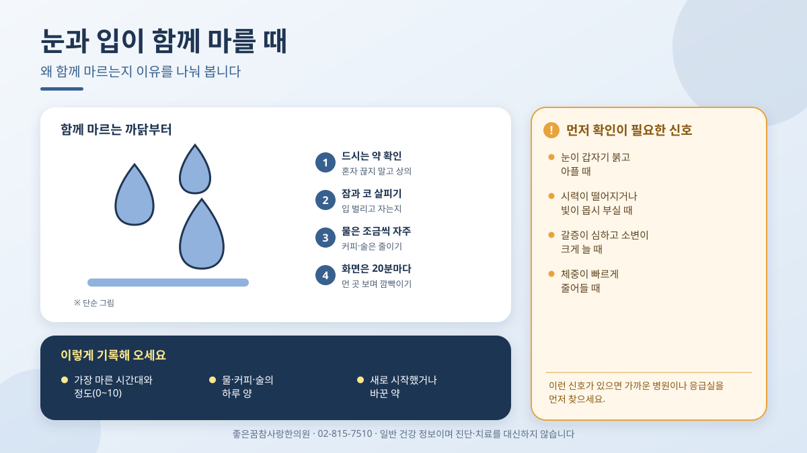
눈도 뻑뻑하고 입도 바짝 마르는 건조 증상이 함께 올 때는 무엇을 나눠 살피나요?
눈이 모래 들어간 듯 뻑뻑하고 입까지 바짝 마르면 하루 내내 신경이 쓰입니다. 드시는 약, 갱년기, 잠과 코막힘, 난방, 쇼그렌 증후군처럼 함께 마르는 까닭을 나눠 보고, 생활 관리와 한의원에서 살피는 점을 정리했습니다.
수정 2026-11-26
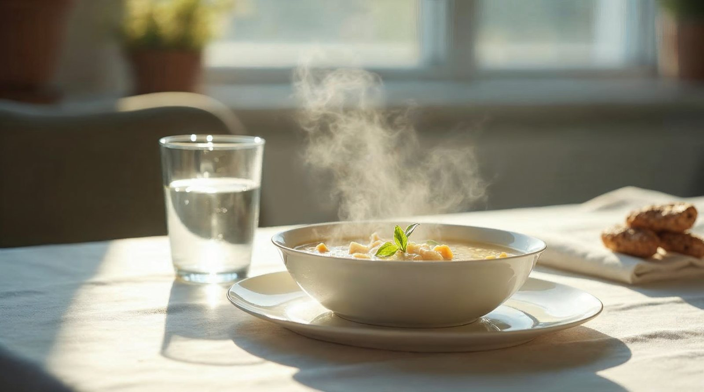
먹고 나면 배가 아프고 설사를 자주 할 때는 어떤 점을 살펴보나요?
밥만 먹으면 화장실이 급해지는 식후 설사는 찬 음식, 먹는 속도, 그날의 긴장과 지난밤 잠을 함께 살핍니다. 피 섞인 변·검은 변, 열과 심한 복통, 밤 설사, 체중 감소, 탈수가 있으면 내과나 응급실이 먼저입니다.
수정 2026-11-26
손을 얹으면 아랫배만 유난히 차가운 하복냉은 왜 생기고 어떻게 살피나요?
다른 곳은 괜찮은데 아랫배만 늘 서늘하고, 찬 것을 먹으면 배가 아프거나 묽은 변을 보는 분이 많습니다. 하복냉이 무엇인지, 장과 생리·소변·잠과는 어떻게 이어지는지, 일상에서 배를 데우는 법을 정리했습니다.
수정 2026-11-26
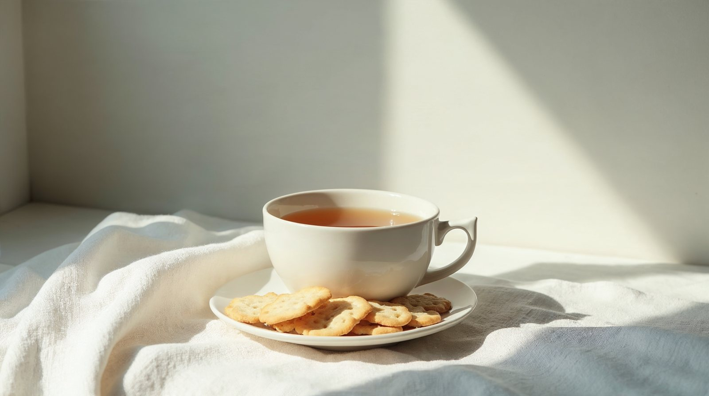
속이 자주 메슥거리고 울렁이는 만성 오심은 어떻게 살피나요?
토할 것 같지는 않은데 속이 하루에도 여러 번 울렁이는 만성 오심은 식사 간격, 잠, 긴장, 드시는 약과 함께 움직입니다. 어떤 때 심해지는지 나눠 보고 한의원에서 무엇을 여쭙고 살피는지 정리했습니다.
수정 2026-11-26
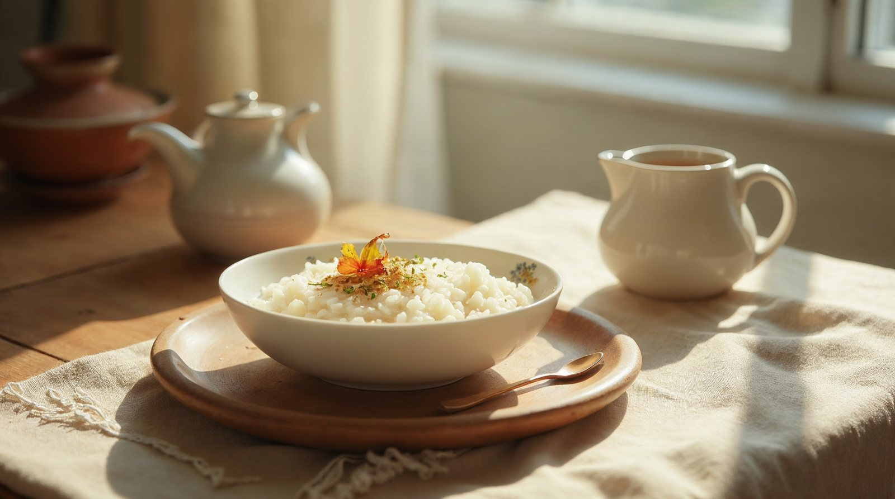
배가 크게 아프지는 않은데 변이 늘 묽고 무른 만성 묽은 변은 어떻게 살피나요?
심한 설사는 아닌데 변이 몇 달째 형태 없이 무르고, 찬 것이나 기름진 음식에 쉽게 흔들리는 분이 많습니다. 먼저 확인할 검사와 장의 리듬, 식사와 생활에서 살필 것을 정리했습니다.
수정 2026-11-26

위내시경에서 만성 위염이라는 말을 들었을 때 무엇을 알아두고 어떻게 살피나요?
만성 위염은 위 점막에 오랫동안 염증 흔적이 남은 상태로, 내시경 소견과 실제 속 불편이 꼭 일치하지는 않습니다. 소견의 종류, 헬리코박터, 약, 식사 리듬을 나눠 보고, 하루의 식사 리듬과 긴장을 함께 살핍니다.
수정 2026-11-26

변비가 오래 이어질 때 한의원에서는 무엇을 먼저 묻나요?
오래된 변비는 횟수보다 굳기와 힘주는 정도, 보고 난 뒤의 시원함을 먼저 묻고 식사 시간·물·걷기·화장실 습관·잠을 함께 살핍니다. 피 섞인 변, 체중 감소, 50세 이후 새로 생긴 변비는 대장 검사가 먼저입니다.
수정 2026-11-26
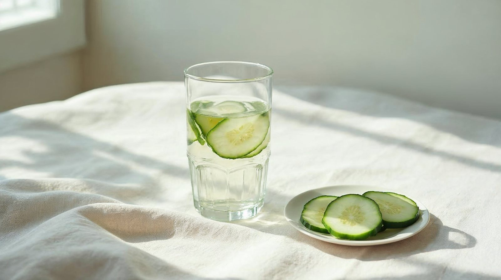
혀와 입안이 따갑고 화끈거리는 구강작열감은 어떻게 살피나요?
겉으로는 멀쩡해 보이는데 혀끝과 입천장이 데인 듯 화끈거리는 구강작열감은 입마름, 영양, 호르몬 변화, 드시는 약, 잠과 긴장이 함께 얽혀 있는 경우가 많습니다. 어떻게 나눠 살피는지와 일상 관리법을 정리했습니다.
수정 2026-11-26

밤만 되면 항문 주위가 가려워 자꾸 긁게 될 때는 무엇을 살피나요?
밤이나 화장실을 다녀온 뒤 항문 주위가 근질거려 자꾸 손이 가는 항문 가려움. 너무 깨끗이 닦는 습관, 습기와 잔변, 음식, 치질과 피부 질환까지 원인을 나눠 보고 생활 관리와 한의원에서 함께 살피는 부분을 정리했습니다.
수정 2026-11-26
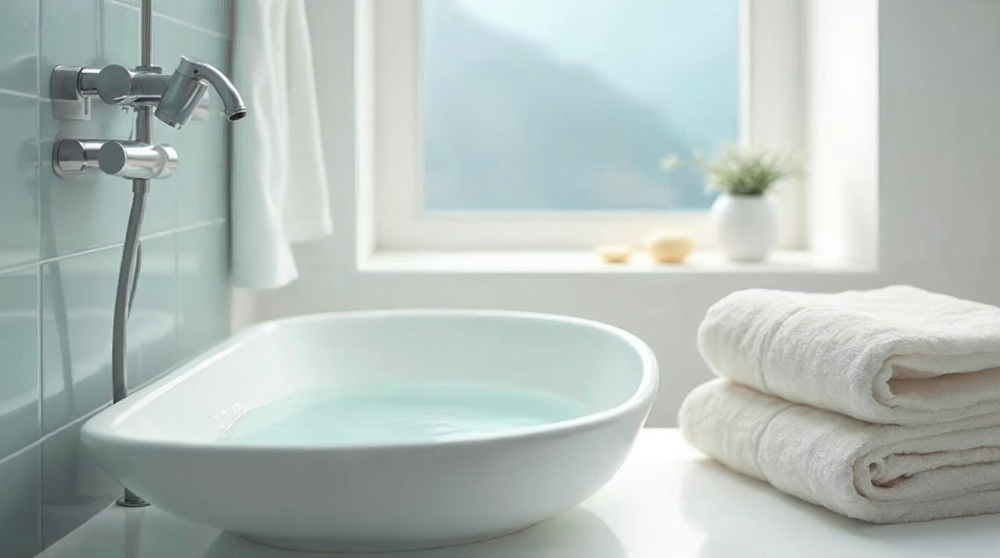
변을 볼 때마다 항문이 찢어지듯 아프고 휴지에 피가 묻는 치열은 어떻게 살피나요?
딱딱한 변을 본 뒤 항문이 칼에 베인 듯 쓰라리고 휴지에 선홍색 피가 묻는 치열. 치질과 어떻게 다른지, 왜 아픔이 되풀이되는지, 변을 부드럽게 하는 생활과 좌욕, 항문외과와 한의원에서 함께 살피는 부분을 정리했습니다.
수정 2026-11-26

입맛이 없고 밥이 잘 넘어가지 않는 성인 식욕부진은 어떻게 살피나요?
배는 고픈 것 같은데 막상 밥상 앞에서는 숟가락이 무겁고, 몇 술 뜨면 더 들어가지 않을 때가 있습니다. 속의 불편, 마음의 지침, 약과 잠, 체중 변화를 나눠 보고 다시 밥맛을 찾아가는 방법을 정리했습니다.
수정 2026-11-26
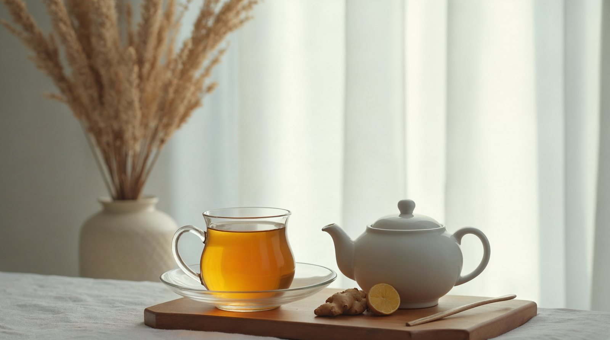
배에 가스가 차고 풍선처럼 부푸는 복부 팽만은 어떻게 나눠 살피나요?
아침에는 납작하던 배가 오후만 되면 바지 단추가 버거울 만큼 부풀 때가 있습니다. 가스가 많은 경우와 장이 예민한 경우, 변비가 숨어 있는 경우를 나눠 보고, 먹는 방식과 음식, 움직임을 함께 살핍니다.
수정 2026-11-26

연말에 한 주에 회식이 세 번이면 속을 어떻게 쉬게 하나요?
회식이 몰린 주에는 늦은 시간의 기름진 음식과 술이 이어져 속이 쉴 틈이 없어지기 쉬워, 회식 사이 끼니와 잠드는 시각을 먼저 묻고 사이 날의 식사부터 함께 조정합니다.
수정 2026-11-25

겨울에 귤·홍시·곶감을 간식처럼 자주 먹은 뒤 속이 쓰리거나 변이 굳고 배에 가스가 찰 때는 어떻게 살피나요?
귤을 빈속에 여러 개 먹으면 속이 쓰릴 수 있고, 감·곶감을 자주 먹으면 변이 굳기 쉬우며, 어떤 과일이든 한꺼번에 많이 먹으면 가스가 찰 수 있습니다. 하루 양과 먹는 시간을 정하고, 어떤 과일 뒤에 어떤 불편이 오는지 일주일만 기록해 보세요.
수정 2026-11-25

시험기간만 되면 속이 더부룩하고 배가 자주 아픈 대학생은 어떻게 살피나요?
시험 준비로 긴장이 이어지고 식사가 불규칙해지면 속이 더부룩하거나 배가 아픈 일이 잦아질 수 있어, 식사 시간과 메뉴, 긴장하는 시간대, 대변 상태를 먼저 묻고 시험기간에도 지킬 수 있는 식사 리듬을 함께 정리합니다.
수정 2026-11-26
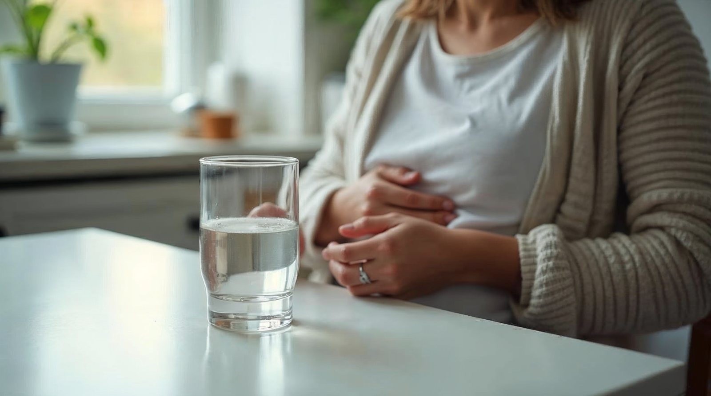
아침을 거르고 공부를 시작하면 오전에 속이 쓰릴 때는 어떻게 하나요?
아침을 거르고 빈속에 커피를 마셔 오전에 속이 쓰리다면 바나나나 두유처럼 간단한 아침을 먼저 먹고 커피는 그 뒤에 마시며 전날 야식을 줄이는 것부터 해 보고, 반복되면 식사 습관과 긴장을 함께 살핍니다.
수정 2026-11-24
퇴근이 늦어 밤 10시 넘어 배달 음식으로 저녁을 먹으면 속이 쓰리고 잠이 얕을 때는 어떻게 살피나요?
늦은 시간에 기름지거나 매운 음식을 먹고 바로 누우면 속쓰림과 신물 올라옴이 생기고 잠도 얕아질 수 있어, 저녁 시간과 메뉴, 먹고 눕기까지의 시간을 먼저 묻고 바꿀 수 있는 저녁 습관을 함께 정리합니다.
수정 2026-11-26
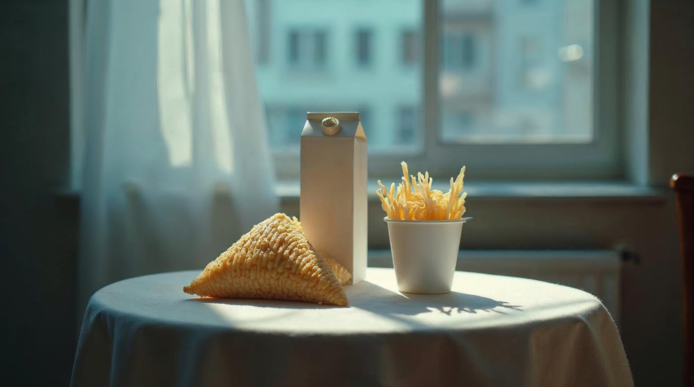
편의점 식사와 컵라면으로 끼니를 때우다 속이 더부룩할 때는?
편의점 식사와 컵라면으로 끼니를 때워 속이 더부룩할 때는 국물 남기기, 단백질과 채소 한 가지 더하기, 10분 이상 천천히 먹기부터 바꾸고, 더부룩함이 자주 반복되면 식사 습관과 소화 상태를 함께 살핍니다.
수정 2026-11-26

위염으로 약을 오래 먹고 있을 때 생활에서 무엇을 살피나요?
위염으로 위산 억제제나 위장약을 오래 먹고 있다면 약 이름과 기간을 알리고 임의로 끊지 않으며 식사 습관과 음주, 진통소염제 복용, 스트레스와 잠을 함께 점검하고 체중 감소나 검은 변이 있으면 병원 검사를 권합니다.
수정 2026-11-26
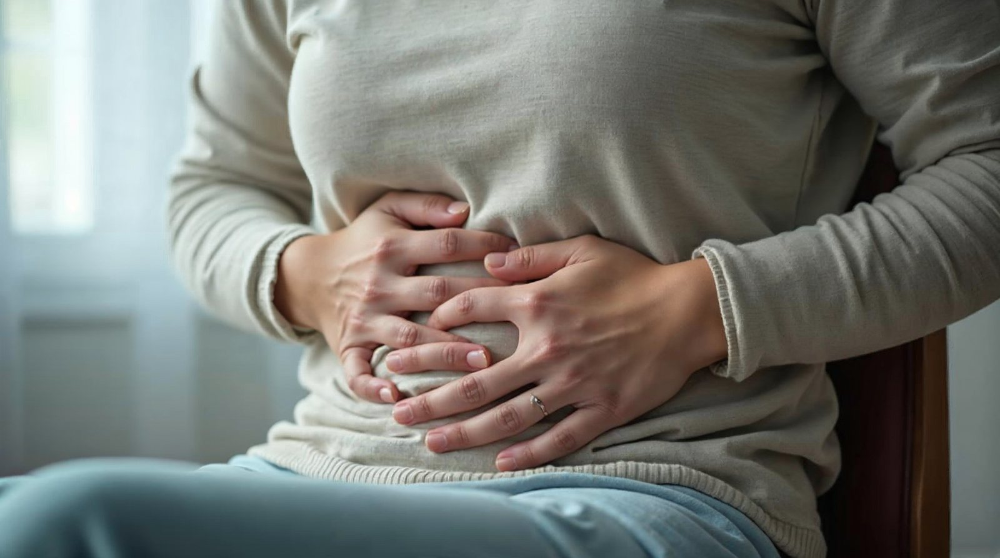
속쓰림인지 더부룩함인지 헷갈릴 때는 어떤 말로 설명하면 좋을까요?
명치가 타는 듯 쓰린지, 배가 꽉 찬 듯 무거운지, 신물이 올라오는지를 나눠 말씀해 주시면 식사와 생활 중 어느 부분을 먼저 살펴볼지 정하기 쉬워집니다.
수정 2026-11-24
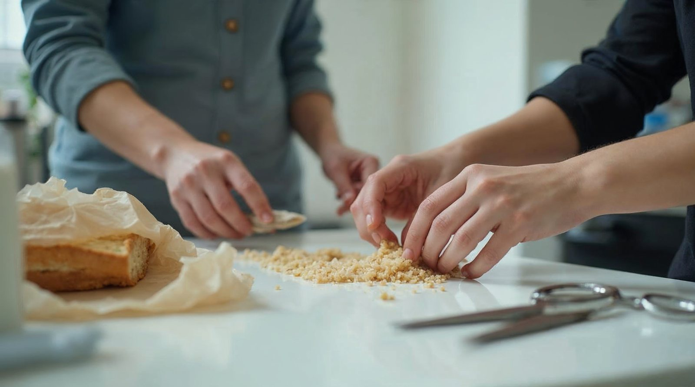
미용 일로 점심을 거르거나 서서 급하게 먹을 때 속이 불편하면 어떻게 살피나요?
손님 일정에 맞추다 보면 점심이 늦어지거나 서서 급하게 먹게 되어 속쓰림과 더부룩함이 생기기 쉬워, 식사 시각과 먹는 자세, 속이 불편한 때부터 함께 살피고 예약 사이에 지킬 수 있는 식사 순서를 정합니다.
수정 2026-11-26

버스·택시 기사가 화장실 때문에 물을 참다가 변비가 생길 때는 어떻게 살피나요?
화장실을 쉽게 갈 수 없어 물과 식사를 줄이고 오래 앉아 있으면 변이 단단해지기 쉬워, 물 마시는 양과 식사, 화장실 가는 시간부터 함께 살핍니다.
수정 2026-11-26
택배·배달 일로 차 안에서 급하게 끼니를 때울 때 속이 불편하면 어떻게 살피나요?
이동 중에 급하게 먹거나 끼니를 미루면 속쓰림과 더부룩함이 생기기 쉬워, 하루 식사 시각과 먹는 속도, 물과 커피 마시는 습관부터 함께 살핍니다.
수정 2026-11-26
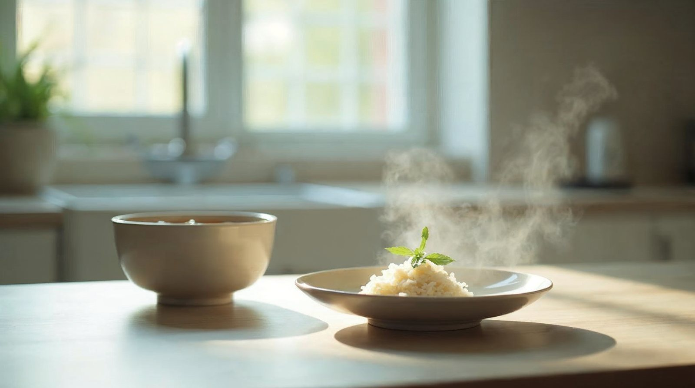
요리를 하며 맛보기로 하루를 보내 제대로 된 끼니를 못 먹을 때는 어떻게 살피나요?
주방에서 일하면 맛보기와 짧은 간식으로 끼니를 대신하기 쉬워 속이 더부룩하거나 허기가 갑자기 몰려올 수 있어, 하루에 앉아서 먹는 끼니와 시각부터 함께 정리합니다.
수정 2026-11-26
연말 회식을 하고 나면 며칠씩 속이 불편한 이유는 무엇인가요?
연말 회식 뒤 며칠씩 속이 더부룩하고 쓰린 것은 기름진 음식과 늦은 식사, 술, 짧은 잠이 겹친 경우가 많아 식사 시각과 양을 함께 살피며, 피를 토하거나 검은 변, 심한 복통이 있으면 가까운 응급실을 먼저 권합니다.
수정 2026-11-26

매운 음식을 먹고 나서 속이 쓰릴 때는 어떻게 살피나요?
매운 음식 뒤 속쓰림과 배 아픔은 양과 빈도, 공복 여부, 함께 먹은 술이나 커피에 따라 달라 식사 패턴을 함께 살피며, 피가 섞인 변이나 몇 주째 계속되는 속쓰림이 있으면 병원 확인을 먼저 권합니다.
수정 2026-11-26

속쓰림과 신물이 오래 갈 때 어떤 점을 살펴보고, 언제 검사를 받아야 하나요?
속쓰림과 신물이 2주 이상 반복되면 식사 시간과 야식, 누운 자세, 음주·흡연 같은 생활을 함께 살핍니다. 검은 변·삼킴 곤란·체중 감소는 내과 확인을, 토혈이나 숨참·식은땀이 따르는 가슴 통증은 가까운 응급실을 먼저 권합니다.
수정 2026-11-26
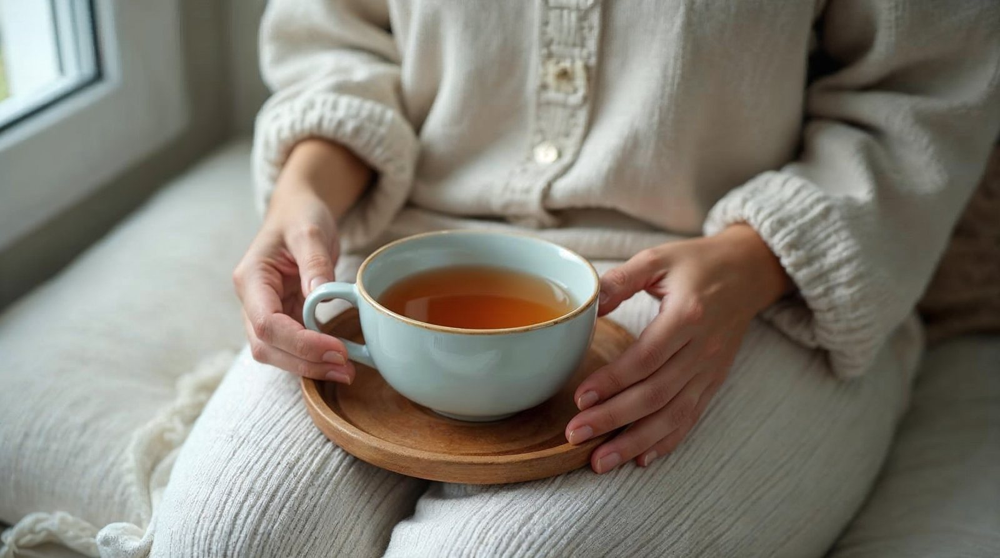
시험 스트레스로 변비나 속 쓰림이 올 때는 무엇을 살피나요?
시험 스트레스로 변비나 속 쓰림이 올 때는 식사 시간과 물, 앉아 있는 시간, 긴장 정도를 함께 살피며, 피가 섞인 변이나 심한 복통 같은 신호는 병원을 먼저 권합니다.
수정 2026-11-26
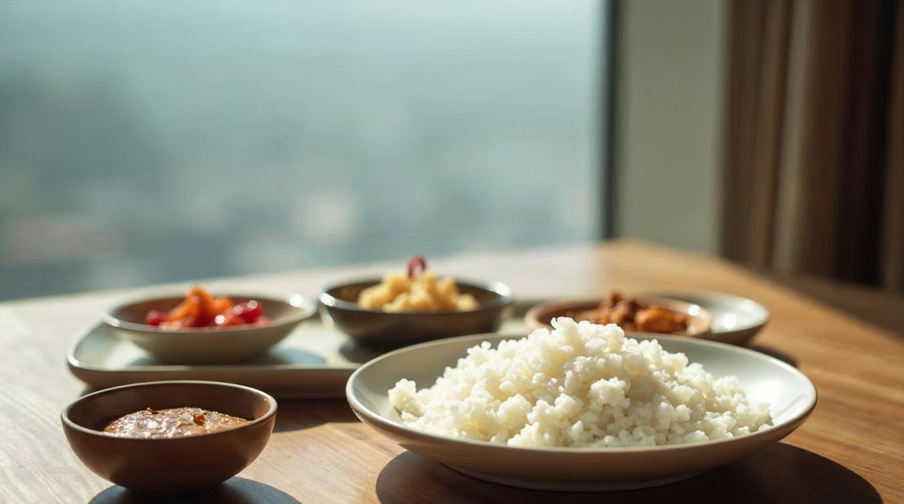
조금만 먹어도 금방 배가 부를 때는 무엇을 살펴보나요?
몇 숟가락만 먹어도 배가 불러 식사량이 줄 때는 먹는 속도와 식사 시간, 스트레스와 체중 변화를 먼저 묻고, 체중이 줄거나 검은 변이 있으면 병원 검사를 먼저 권합니다.
수정 2026-11-26
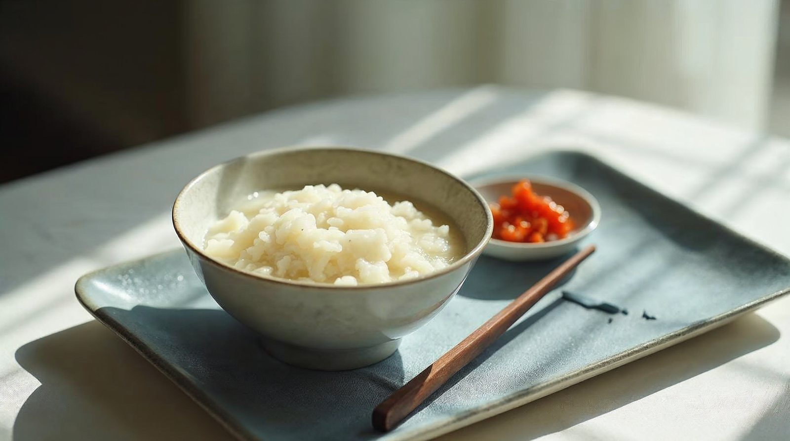
소화가 오래 불편할 때 한의원에서는 무엇을 먼저 묻나요?
오래 이어지는 소화 불편은 더부룩함·속쓰림·식후 불편·대변 상태를 일상의 말로 먼저 묻고 식사와 잠, 스트레스를 함께 살피며, 체중 감소나 검은 변 같은 경고 증상이 있으면 내과 검사를 먼저 권합니다.
수정 2026-11-26
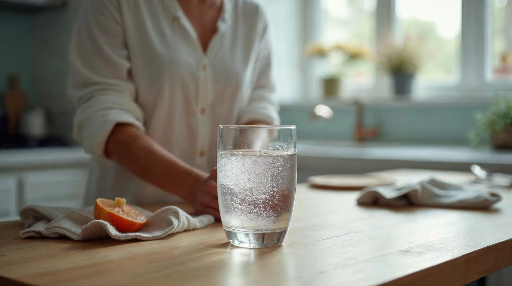
찬 음식이나 찬 음료를 먹으면 배가 아플 때는 어떻게 하나요?
찬 음식이나 음료 뒤에 복통이나 설사가 반복되면 먹은 양과 속도, 평소 장 상태를 함께 살피고, 열이 나거나 피가 섞인 설사가 있으면 병원 진료를 먼저 권합니다.
수정 2026-11-26

식사 뒤에 속이 더부룩한 것은 무엇 때문이고, 속쓰림과는 어떻게 다른가요?
식후 더부룩함은 먹는 속도와 양, 음식 종류, 변 상태, 잠과 스트레스가 겹쳐 생기는 경우가 많아 함께 살피고, 공복 속쓰림이나 체중 감소·검은 변 같은 경고 신호가 있으면 먼저 병원 검사를 권합니다.
수정 2026-11-26